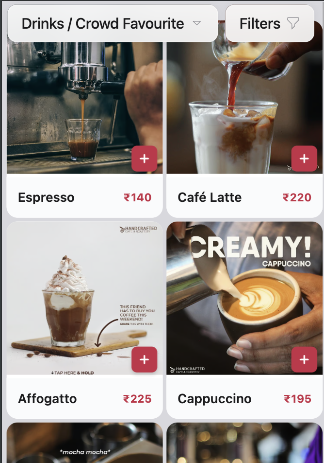
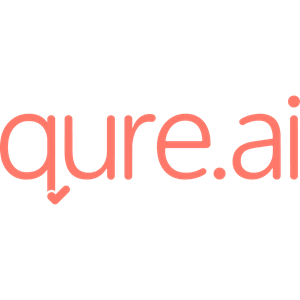
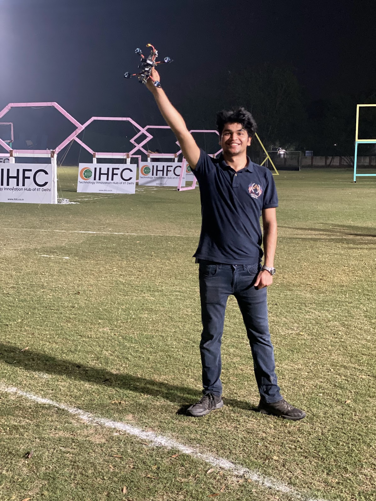
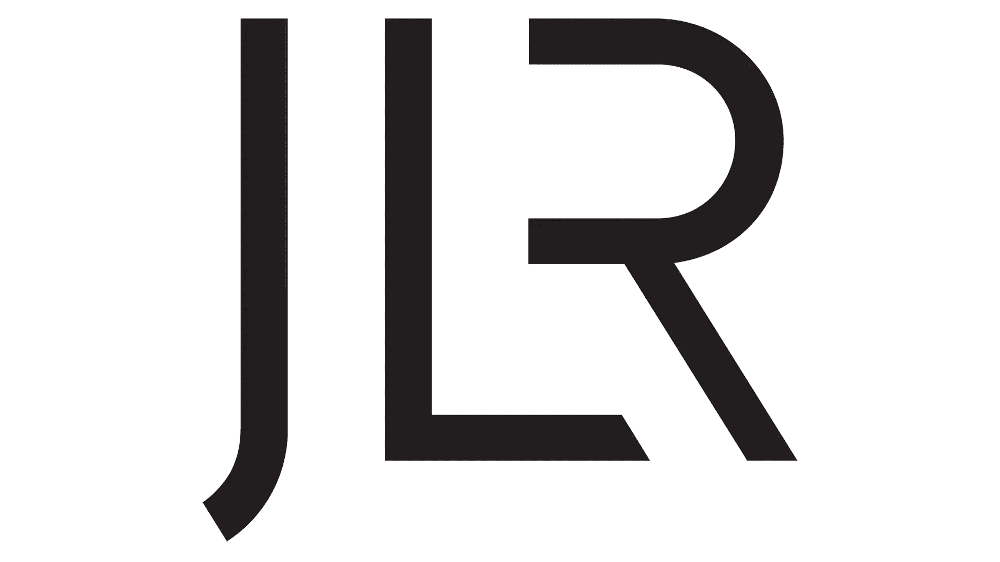
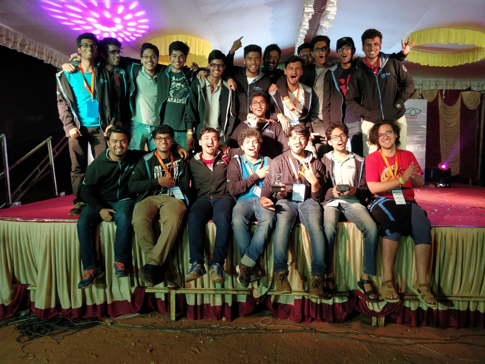
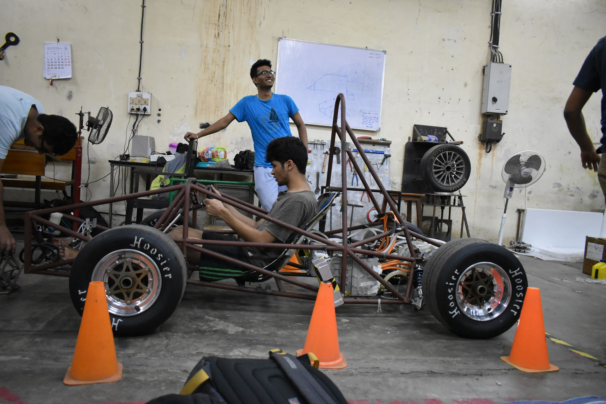
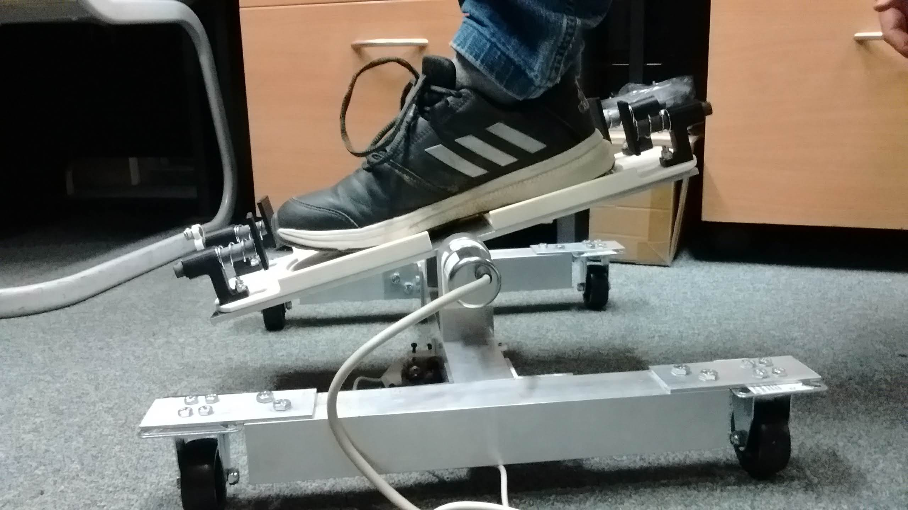
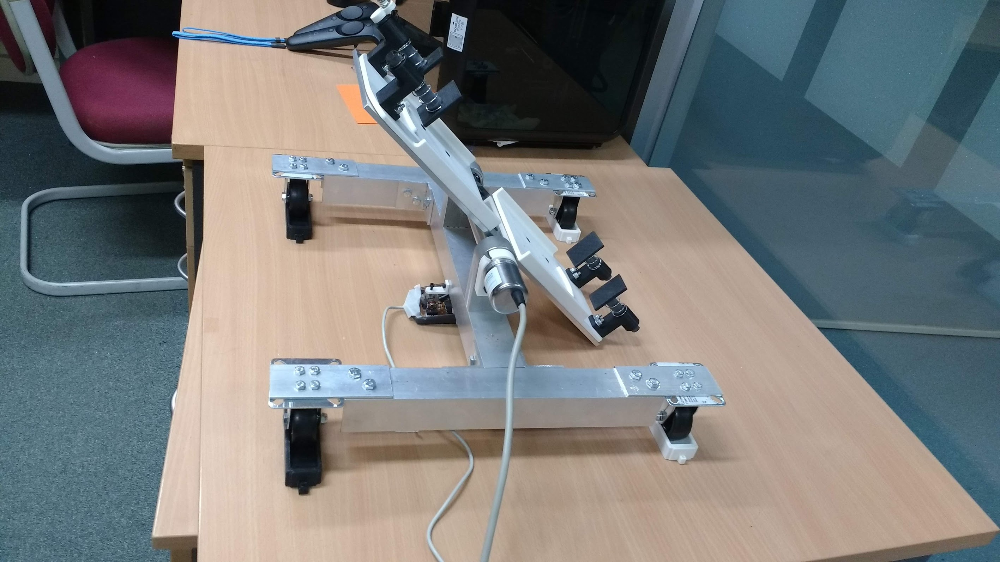

Aglio
A tool to help restaurants promote their bestsellers and speciality items through high quality picture and videos along with a all knowing AI powered chatbot to answer customer queries

Qure.ai
Senior AI Engineer at a leading healthtech Startup, working on AI-powered medical imaging solutions including qXR for chest X-rays and Stroke Suite for stroke detection and triaging.


Drones
Published research paper in 2020 on drone trajectory optimization. Started racing FPV drones, secured 3rd position in IDRL 2022 race. Built custom drones for racing and aerial cinematography.

Jaguar Land Rover
Graduate Mechanical Engineer developing mathematical models for electric motor performance prediction and thermal modeling using Ansys and Simulink.


Formula Student
Design Engineer at IIT Bombay Racing Team. Designed, fabricated and assembled steering system components reducing weight by 60%. Team won Formula Student award for fourth consecutive time and stood 4th best in Engineering Design among electric vehicles in Formula Student UK'18.


Monash University
Research Intern at RoMI Lab developing a novel four-degree-of-freedom foot interface for controlling robotic arms in laparoscopic surgery. Published paper in IEEE BioRob 2020.
IIT Bombay
Dual Degree (B.Tech + M.Tech) in Mechanical Engineering with 9.12/10 CGPA. Formula Student team member, research in autonomous drones, Institute Academic Prize recipient.